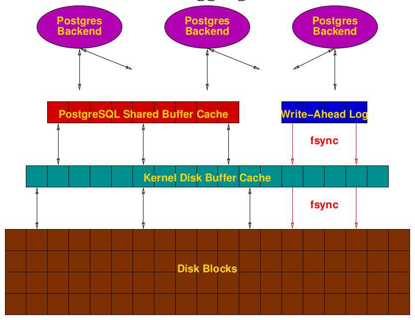

PostgreSQL Overview¶
PostgreSQL is a MVCC database. It means all transactions generate new lines. For exaple, an update is in fact a delete and an insert and the old line still exists on disk. So vacuum is a complementary process so important to regain space !
See this blog post for a good explanation of MVCC model and vacuum.
MVCC model (see details) means data are not really deleted, and updated data are in fact deleted then inserted. So, natural trends is to always occupy more and more space.
Vacuum processes (See details) are made to recover / recycle this space. And Analyze See details refresh the internal statistics so the query planner could build the most efficient query plan.
To optimize query response, PostgreSQL use an internal cache system, mainly known ads Shared buffers. See details.
An overview of PostgreSQL writings¶
.
As a transaction is committed, it's first flushed to WAL files, designed to store transactions for data coherence insurance. See details.
As the same time, shared buffers is used to store data, indexes to speed up backend queries execution. Data are flushed to disk in a regular way, using checkpoint process. See details.
Configuration¶
PostgreSQL configuration is located in the /etc/postgresql/9.6/main/postgresql.conf file.
Many parameters could be hot reloaded by sudo /etc/init.d/postgres reload for example.
Some others need a restart : sudo /etc/init.d/postgres restart.
The most useful way to customize the configuration is to include a file containing only customized parameters (or several files in a directory). See the official documentation.
In the postgres.conf file, add an include 'filename' directive where filename could be either a path relative to the postgres.conf file location or an absolute path.